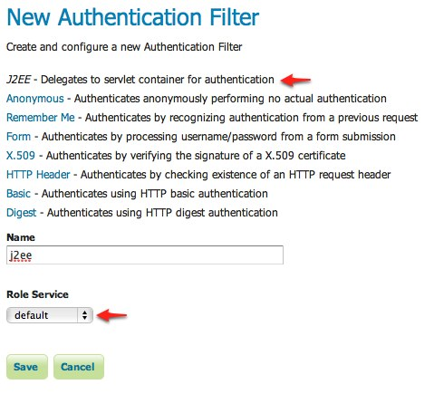
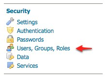
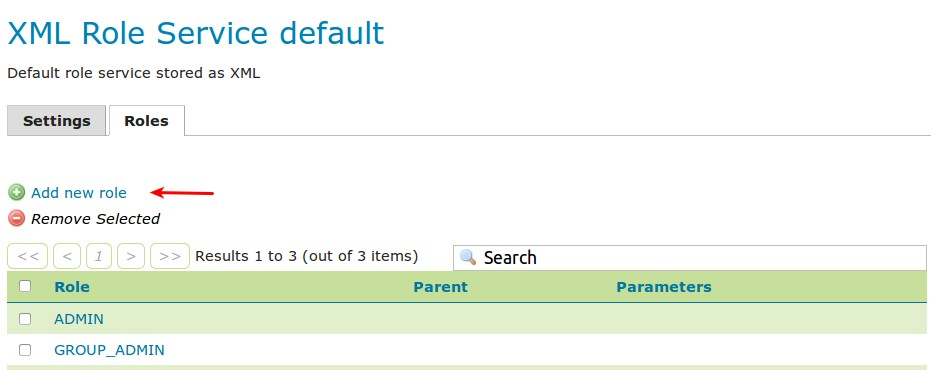
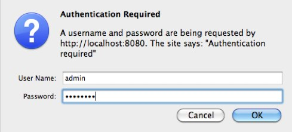

Configuring J2EE Authentication¶
Tomcat과 Jetty 같은 서블렛 컨테이너는 인증 작업을 위한 자체 옵션을 갖추고 있습니다. GeoServer 같은 애플리케이션의 경우 자체 인증 작업 설정을 쓰기보다 주로 이런 기존 인증 메커니즘을 사용하는 편이 바람직합니다.
J2EE 인증은 GeoServer가 인증 작업을 서블렛 컨테이너에 위임할 수 있도록 해줍니다. 이 예제에서 J2EE 인증 작업을 설정하는 과정을 단계별로 설명합니다.
Prerequisites¶
이 예제에 자체적으로 인증 작업이 가능한 서블렛 컨테이너가 필요합니다. 이 예제에서는 Tomcat을 사용합니다.
예제를 진행하기 전에 Tomcat에서 GeoServer를 실행하십시오.
Configure the J2EE authentication filter¶
인증 작업을 컨테이너에 위임하기 위해 먼저 컨테이너 인증을 식별할 수 있도록 필터를 설정해야 합니다.
admin 사용자로 웹 관리자 인터페이스에 로그인합니다.
사이드 메뉴의 Security 섹션 아래 있는 Authentication 링크를 클릭하십시오.

Authentication Filters 패널로 스크롤해서 Add new 링크를 클릭하십시오.
“j2ee”라는 명칭으로 새로운 필퍼를 생성한 다음, 설정 서식의 항목에 다음과 같이 입력하십시오.
- Role service에 “default”를 입력합니다.
저장하십시오.
다시 Authentication 페이지로 돌아와 Filter Chain 패널로 스크롤합니다.
Request type 드롭다운 메뉴에서 “Web UI”를 선택합니다.
j2ee 필터를 선택한 다음 remeberme 필터 뒤로 옮깁니다.

저장하십시오.
Configure the role service¶
J2EE 컨테이너에 본체(principal)의 롤을 할당하도록 요구할 수 없기 때문에, 롤 서비스에 모든 J2EE 롤들을 등록해야 합니다. GeoServer는 다음 J2EE API만을 사용할 수 있습니다.
class: javax.servlet.http.HttpServletRequest
method: boolean isUserInRole(String role)
롤 서비스에서 모든 롤을 쿼리해서 “isUserInRole” 방식으로 각 롤을 테스트하는 것입니다.
이 예제에서 “admin”이라는 사용자가 “password”라는 비밀번호와 “tomcat”이라는 J2EE 롤을 가지고 있다고 가정합니다.
사이드 메뉴의 Security 섹션 아래 있는 Users, Groups, Roles 링크를 클릭하십시오.
“default”라는 롤 서비스를 사용하려면 default를 클릭하십시오.
Roles 탭으로 이동합니다.

Add new role 링크를 클릭하십시오.
- Name에 “tomcat”을 입력합니다.

저장하십시오.
Configure Tomcat for authentication¶
Tomcat은 기본적으로 웹 응용 프로그램에 인증을 요구하지 않습니다. 이 섹션에서 GeoServer에 기본 인증 로그인을 요구하는 보안을 적용하도록 Tomcat을 설정합니다.
Tomcat을 정지하십시오.
Tomcat 루트 디렉터리의 conf/tomcat-users.xml “admin”이라는 사용자를 추가합니다.
<user username="admin" password="password" roles="tomcat"/>
Tomcat 루트 디렉터리의 webapps/geoserver/WEB-INF/web.xml 위치에 있는 GeoServer 용 web.xml 파일을 열어 파일 끝부분의 </web-app> 요소 바로 앞에 다음 내용을 추가합니다.
<security-constraint> <web-resource-collection> <url-pattern>/*</url-pattern> <http-method>GET</http-method> <http-method>POST</http-method> </web-resource-collection> <auth-constraint> <role-name>tomcat</role-name> </auth-constraint> </security-constraint> <login-config> <auth-method>BASIC</auth-method> </login-config>web.xml 파일을 저장한 다음 Tomcat을 재시작합니다.
주석
web.xml 안의 모든 롤 명칭을 설정된 롤 서비스에 추가해야 합니다. 2중 작업이지만 현재 버전에서는 다른 방법이 없습니다.
Test J2EE login¶
GeoServer 웹 관리자 인터페이스로 이동합니다. 인증을 요구하는 대화창이 뜰 것입니다.
사용자명 “admin”, 비밀번호 “password”를 입력합니다.

admin 사용자가 GeoServer 웹 관리자 인터페이스에 로그인되었습니다.